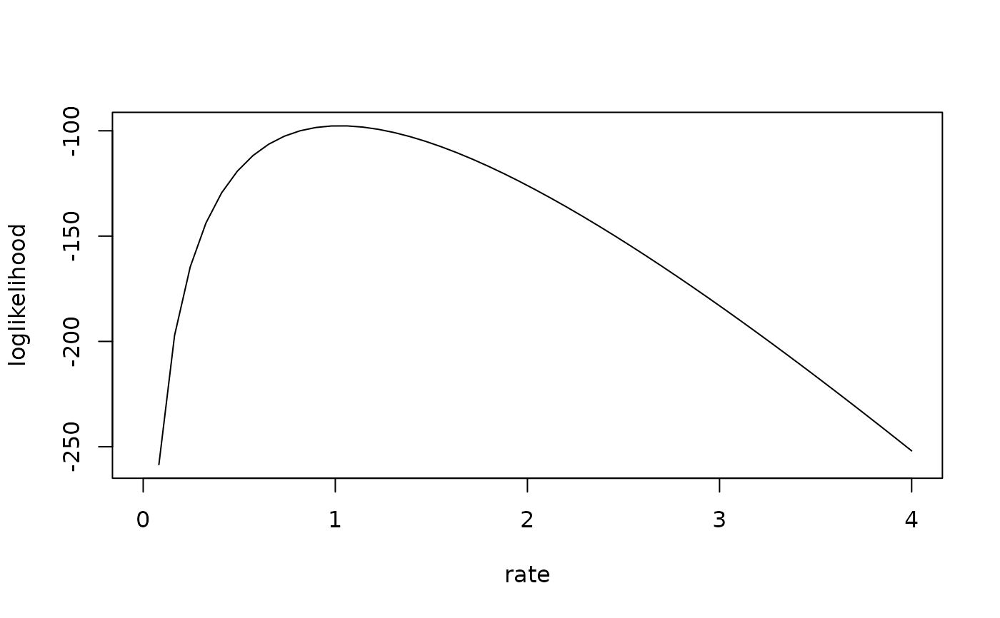
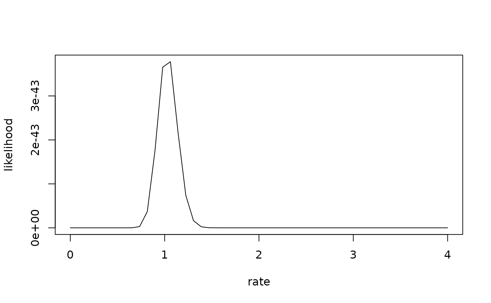
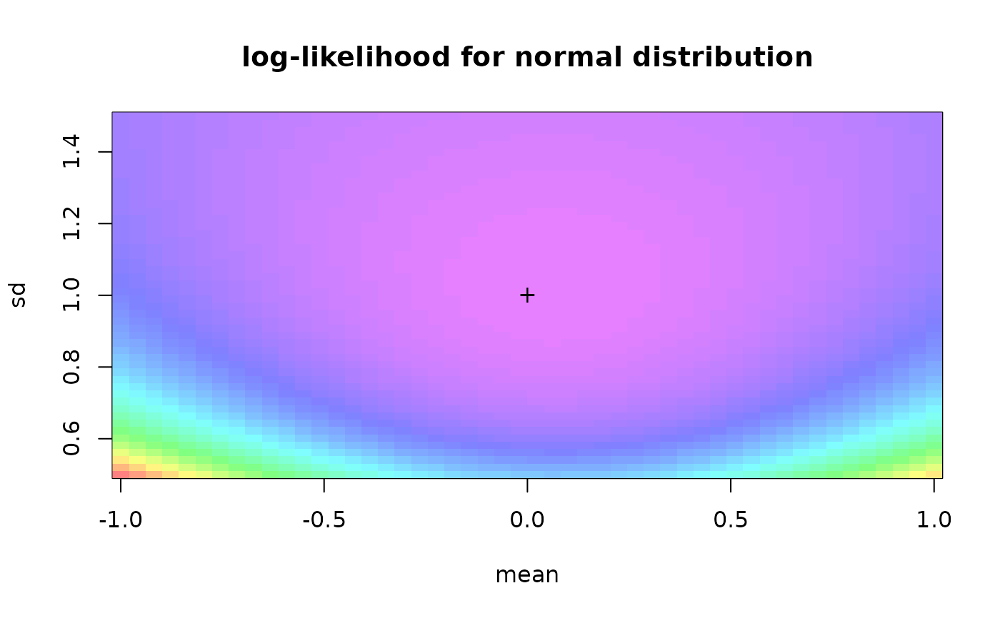
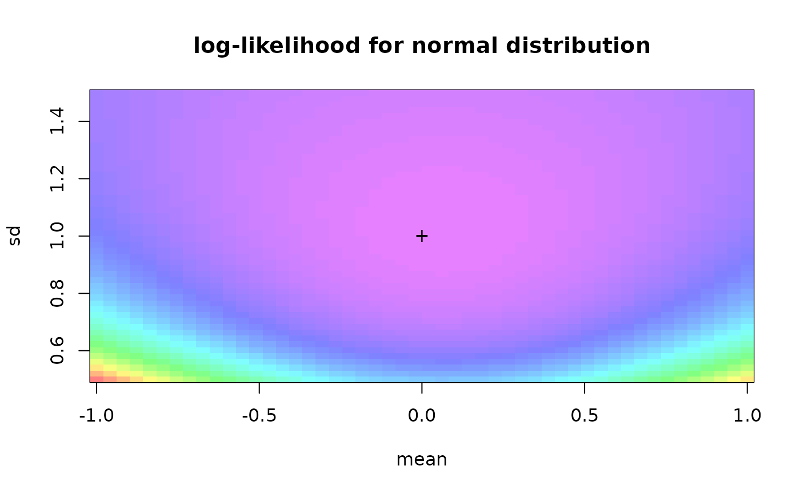

(Log)likelihood surfaces or (log)likelihood curves
logLik-surface.Rdllsurface plots the likelihood surface for distributions with two or more parameters,
llcurve plots the likelihood curve for distributions with one or more parameters.
Usage
llsurface(data, distr, plot.arg, min.arg, max.arg, lseq = 50, fix.arg = NULL,
loglik = TRUE, back.col = TRUE, nlev = 10, pal.col = terrain.colors(100),
weights = NULL, ...)
llcurve(data, distr, plot.arg, min.arg, max.arg, lseq = 50, fix.arg = NULL,
loglik = TRUE, weights = NULL, ...)Arguments
- data
A numeric vector for non censored data or a dataframe of two columns respectively named left and right, describing each observed value as an interval for censored data. In that case the left column contains either NA for left censored observations, the left bound of the interval for interval censored observations, or the observed value for non-censored observations. The right column contains either NA for right censored observations, the right bound of the interval for interval censored observations, or the observed value for non-censored observations.
- distr
A character string "name" naming a distribution for which the corresponding density function dname and the corresponding distribution function pname must be classically defined.
- plot.arg
a two-element vector with the names of the two parameters that will vary for
llsurface, only one element forllcurve.- min.arg
a two-element vector with lower plotting bounds for
llsurface, only one element forllcurve.- max.arg
a two-element vector with upper plotting bounds for
llsurface, only one element forllcurve.- lseq
length of sequences of parameters.
- fix.arg
a named list with fixed value of other parameters.
- loglik
a logical to plot log-likelihood or likelihood function.
- back.col
logical (for llsurface only). Contours are plotted with a background gradient of colors if TRUE.
- nlev
number of contour levels to plot (for llsurface only).
- pal.col
Palette of colors. Colors to be used as back (for llsurface only).
- weights
an optional vector of weights to be used in the fitting process. Should be
NULLor a numeric vector with strictly positive values (classically the number of occurences of each observation).- ...
Further graphical arguments passed to graphical functions.
Details
These two function are not intended to be called directly but is internally called in
llplot.
llsurface plots the likelihood surface for distributions with two
varying parameters and other parameters fixed.
When back.col, image (2D-plot) is used.
When nlev > 0, contour (2D-plot) is used to add
nlev contours.
llcurve plots the likelihood curve for distributions with one
varying parameter and other parameters fixed.
References
Delignette-Muller ML and Dutang C (2015), fitdistrplus: An R Package for Fitting Distributions. Journal of Statistical Software, 64(4), 1-34, doi:10.18637/jss.v064.i04 .
Examples
# (1) loglikelihood or likelihood curve
#
n <- 100
set.seed(1234)
x <- rexp(n)
llcurve(data = x, distr = "exp", plot.arg = "rate", min.arg = 0, max.arg = 4)

llcurve(data = x, distr = "exp", plot.arg = "rate", min.arg = 0, max.arg = 4,
loglik = FALSE)

llcurve(data = x, distr = "exp", plot.arg = "rate", min.arg = 0, max.arg = 4,
main = "log-likelihood for exponential distribution", col = "red")
abline(v = 1, lty = 2)
 # (2) loglikelihood surface
#
x <- rnorm(n, 0, 1)
llsurface(data =x, distr="norm", plot.arg=c("mean", "sd"),
min.arg=c(-1, 0.5), max.arg=c(1, 3/2), back.col = FALSE,
main="log-likelihood for normal distribution")
llsurface(data =x, distr="norm", plot.arg=c("mean", "sd"),
min.arg=c(-1, 0.5), max.arg=c(1, 3/2),
main="log-likelihood for normal distribution",
nlev = 20, pal.col = heat.colors(100),)
points(0, 1, pch="+", col="red")
# (2) loglikelihood surface
#
x <- rnorm(n, 0, 1)
llsurface(data =x, distr="norm", plot.arg=c("mean", "sd"),
min.arg=c(-1, 0.5), max.arg=c(1, 3/2), back.col = FALSE,
main="log-likelihood for normal distribution")
llsurface(data =x, distr="norm", plot.arg=c("mean", "sd"),
min.arg=c(-1, 0.5), max.arg=c(1, 3/2),
main="log-likelihood for normal distribution",
nlev = 20, pal.col = heat.colors(100),)
points(0, 1, pch="+", col="red")
 llsurface(data =x, distr="norm", plot.arg=c("mean", "sd"),
min.arg=c(-1, 0.5), max.arg=c(1, 3/2),
main="log-likelihood for normal distribution",
nlev = 0, back.col = TRUE, pal.col = rainbow(100, s = 0.5, end = 0.8))
points(0, 1, pch="+", col="black")

llsurface(data =x, distr="norm", plot.arg=c("mean", "sd"),
min.arg=c(-1, 0.5), max.arg=c(1, 3/2),
main="log-likelihood for normal distribution",
nlev = 0, back.col = TRUE, pal.col = rainbow(100, s = 0.5, end = 0.8))
points(0, 1, pch="+", col="black")
